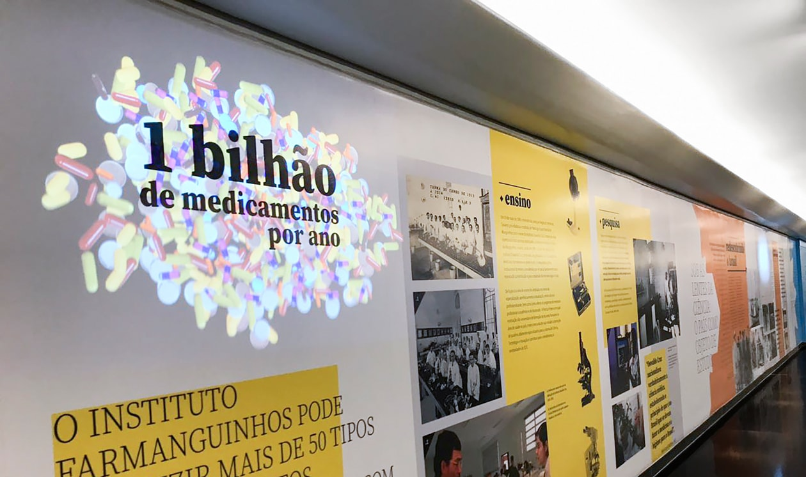

Oswaldo Cruz: Ciência e Saúdeno Projeto Nacional
Como parte das comemorações do Ano Oswaldo Cruz, centenário de sua morte, a Fiocruz montou uma exposição para celebrar seu legado. A primeira montagem se deu no corredor de acesso da Câmara dos Deputados em Brasília e posteriormente percorrerá o Brasil. Este projeto foi realizado em conjunto com uma equipe dentro do estúdio Disarme Gráfico.
Além da informações fixas dispostas na parede a exposição contava também com televisões que transmitiam trechos de documentários e projeções mapeadas que instigavam os visitantes.
Após o projeto da exposição voltei a trabalhar com a Disarme Gráfico fazendo uma adaptação do projeto para a web, dentro de um portal com novas camadas de informações. Nesta parte do projeto trabalhei com o programador Felipe Hollanda e desenvolvi a maior parte do front-end do site.